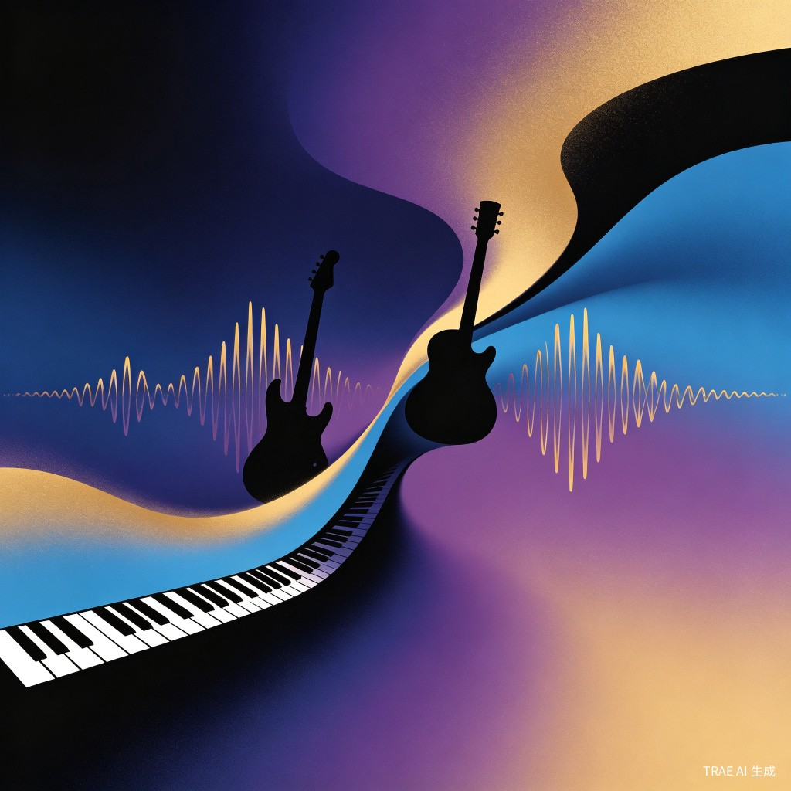

很多普通人曾经写过歌、录过 Demo，但因为不会编曲、不会制作、不会包装，这些作品只能沉睡在手机录音和笔记本里。
有词有曲有旋律，但不知道如何加入鼓点、贝斯、和弦、音色，很难把一首歌变成完整的编曲作品。
找专业编曲师制作一首歌动辄数千元，沟通门槛高，周期长，对普通人来说难以承受。
即使做好了单首歌，也缺少统一的专辑封面设计、文案介绍和可分享的展示页面。
很多有情感价值的原创作品，因为制作门槛太高，最终只能被长期搁置，无人知晓。
点击下方每个步骤，查看 AI 如何帮助你完成从原始素材到完整专辑的全流程。
上传你的清唱录音、吉他弹唱 Demo 或简单旋律文件，AI 将自动分析音频特征。
拖拽或点击上传你的 Demo 文件
支持 MP3 / WAV / M4A / AAC，最大 50MB
粘贴或输入你的歌词文本，AI 将分析情绪基调、主题和叙事结构。
AI 根据歌词情绪推荐合适的编曲风格，你也可以自由选择心仪的风格方向。
✨ AI 推荐风格（基于歌词分析）
AI 根据你的 Demo、歌词和风格偏好，生成完整的编曲方案，包括乐器配置、段落结构和音色建议。
AI 根据歌曲情绪和风格，自动生成匹配的专辑封面设计，你也可以选择情绪标签和配色方案。

AI 自动生成一个精美的"我的 AI 原创专辑"展示页面，包含专辑封面、曲目列表和试听功能，可直接分享给朋友。
我的第一张 AI 原创专辑
6 首歌曲 · 24 分钟 · 2026
不是让 AI 替代人创作，而是让 AI 帮助普通人完成过去无法完成的创作。
将"歌词整理、风格分析、编曲设计、封面生成、展示页面"整合到一个流程中，大幅降低音乐制作的入门门槛，让普通人也能快速完成从 Demo 到专辑雏形的创作过程。
很多人的歌词和旋律背后都有真实的人生经历、情感记忆和家庭故事。通过 AI，这些被尘封的个人作品可以被重新整理、制作和分享，让更多普通人拥有表达自己的能力。
AI 不是替代创作者，而是成为每个人的"私人唱片制作人"，帮助有表达欲的人跨越技术鸿沟，专注于创作本身，让创意真正被看见、被听见。
如果你也曾写过歌、录过 Demo，却苦于无法制作成完整的作品，这个产品就是为你而生的。
回到流程演示